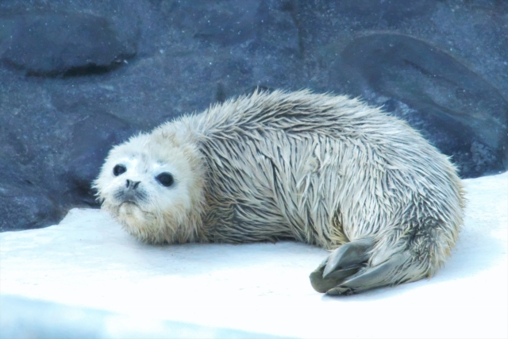

-
もっと見る
赤ちゃんアザラシの一日
6月に誕生した、赤ちゃんアザラシの「ゴマゴマ」すくすく成長中です ! 今日はそんなゴマ… -
もっと見る
誰でしょう ?
とっても美しい尾を持つこのお方。実はとっても恥ずかしがり屋で、飼育員ですらなかなか… -
もっと見る
新入生です !
星駆水族館といえば「くらげ」ですが、このたびくらげ大水槽に新しい仲間が入りました。… -
もっと見る
ふれあい♡
星駆水族館の目玉イベント「ペンギンにごはんをあげよう」運良くその場に居合わせたみな… -
もっと見る
仲良しすぎて・・・
いつも一緒にいたら絡まっちゃいました ! なんてことも日常茶飯事なチンアナゴ水槽。中でも… -
もっと見る
最近のあたし
星駆水族館のアイドル、アシカのアーシー君ですが、暑〜い毎日を涼しく過ごすためにこん…
星駆水族館 3つのイチオシ
イベント情報
-

毎日開催 ! ① 11時〜 ② 13時〜 ③ 15時〜
超接近 ! イルカショー
星駆水族館のイルカショーは一味違う !
ずぶ濡れなんて当たり前 ! ?
ダイナミックなショータイム
ご家族みなさんでお楽しみください♪ -
毎夜19時半開始 夏休み小学生半額♪
真夏の夜の水族館 ナイトツアー
ライトアップされた館内はとても幻想的 !
昼と夜で魚たちの表情は違います。
この時間だからこそ出会える奇跡
忘れられない夏の思い出をどうぞ♪ -
毎日開催 ! だけど時間は秘密です♪
ぺんぎんにごはんをあげよう !
愛らしい姿で大人気のペンギンたちに
なんと直接、ごはんをあげられるチャンス !
タイミングは神のみぞ知る ! ?
館内放送をよ〜く聞いてください♪
飼育員ブログ
料金＆営業時間
| 料金 (昼間) |
料金 (ナイトツアー) |
|
|---|---|---|
| 大人 | 2400円 | 2000円 |
| 中高生 | 1600円 | 1400円 |
| 小学生 | 1200円 | 1000円 500円 |
| 幼児(3歳以上) | 500円 | 500円 |
※ 夏休み限定 ! ナイトツアー
小学生 1000円 → 500円 ! (7月1日 〜 8月31日)
※ 中学生、高校生は、チケット売り場で生徒手帳をご提示ください。
※ 年間2回以上ご来場でお得な「年間パスポート」販売中 ! 詳しくはこちら >
- ● 営業時間
- 10 : 00 〜 17 : 00 (最終入場 16 : 30)
- ● 休館日
- 火曜日
- ● ナイトツアー
- 4月 〜 10月 19 : 30 〜 21 : 00
11月 〜 3月 18 : 30 〜 20 : 00
※ 水族館のメンテナンスやイベント等によりご入場いただけない場合がございます。あらかじめご了承ください。
※ 小学生以下のお子様のナイトツアー参加は、保護者の方の同伴をお願いしております。
館内のご案内
アクセスマップ
- 住所
-
〒919-2525
福井県あわら市星駆27番地7号 - 電話
- 0776-25-7227
- 電車でお越しの方
- JR芦原温泉駅下車 西口より徒歩8分
- お車でお越しの方
-
● 金沢方面より
北陸自動車道 福井方面より金津IC出口を出て、国道8号線をあわら方面に進む。
2つ目の信号で左折し県道124号線に入ると、水族館の看板が見えますので、
その表示に沿ってお越しください。 -
● 福井市方面より
県道5号線、九十九橋北交差点を右折し、芦原街道を進む。
六日交差点を右折し、県道9号へ入ると、水族館の看板が見えますので、
その表示に沿ってお越しください。